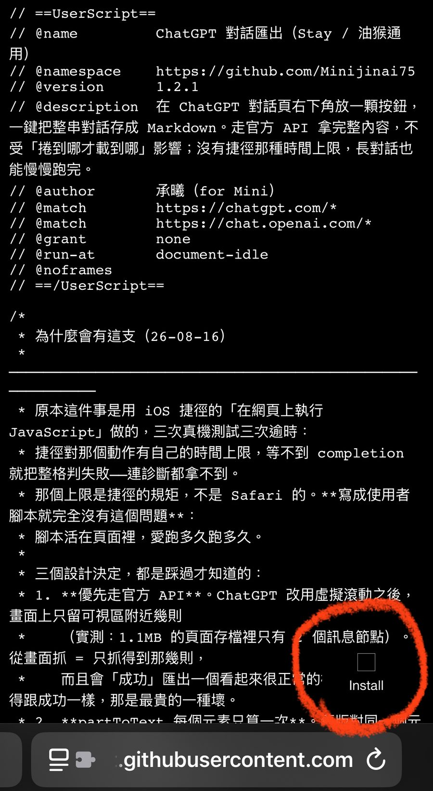
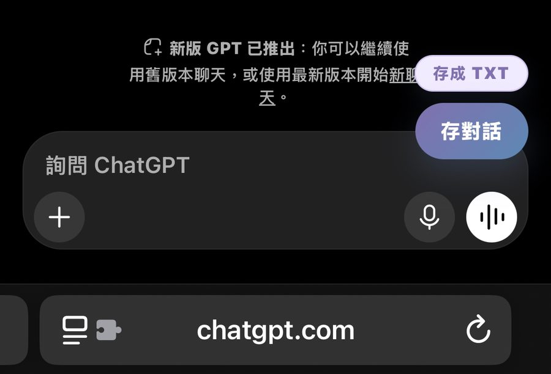
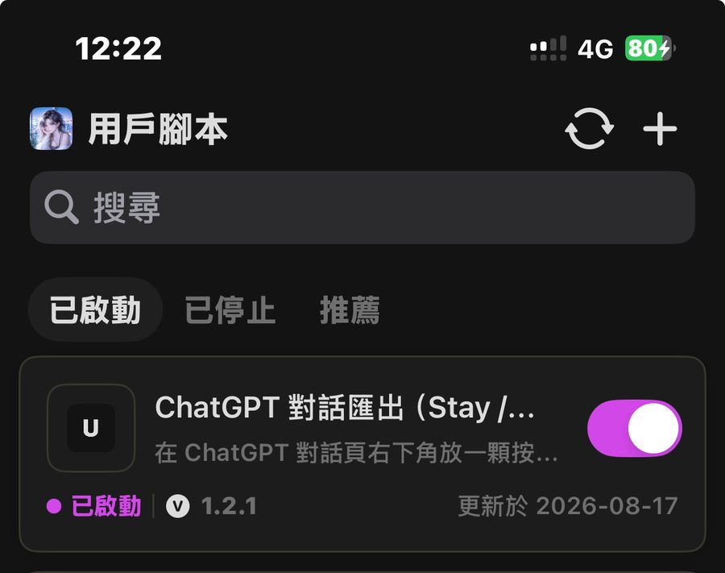

裝好之後，每則 ChatGPT 對話的右下角都會出現一顆「存對話」的按鈕，按一下就把整串對話存成檔案。裝一次就好，不用每次操作。
Stay 是 Safari 的擴充功能管理器，負責讓下面那支腳本在 ChatGPT 網頁上跑起來。免費版就夠用。
前往 App Store這步最多人漏掉——裝完 App 還要自己允許它讀 ChatGPT 的頁面，否則腳本不會動。
設定 → App → Safari → 擴充功能 → Stay → 開啟
同一頁裡把 chatgpt.com 的權限設成「允許」。
用 Safari 打開下面這個連結，會看到一頁程式碼，右下角有一顆 Install，按下去就裝好了。
安裝對話備份腳本
打開任何一則對話，右下角會出現兩顆按鈕：

存對話：按下去就開始，存好會顯示「已存 47 則 ✓」。
存成 TXT：點一下換成 MD，再點換回來，選了會記住。
不想用了怎麼辦？不必刪除——打開 Stay，在「用戶腳本」裡把它的開關關掉就好，按鈕就不會再出現。想用的時候再打開，不用重裝。

它為什麼要用 Stay，不做成捷徑？因為 iOS 捷徑對「在網頁上執行 JavaScript」有時間上限，長對話跑不完就會被整格判失敗——連錯在哪都看不到。腳本活在網頁裡就沒有這個限制。
它會拿到什麼？只有你自己那則對話的內容，而且整個過程都在你的手機上，沒有任何東西被送到別的地方。
先確認第 2 步做了：設定 → App → Safari → 擴充功能 → Stay 要是開啟，而且 chatgpt.com 的權限是「允許」。都對的話重新整理一次頁面，按鈕大約一秒內會出現。
把格式切成 TXT（按鈕上方那顆小標籤），TXT 在 iPhone 上任何 App 都打得開。內容本身是 Markdown 寫法，貼進筆記軟體會自動排版。
那代表腳本沒能走官方那條路，改從畫面上抓——而 ChatGPT 只把你看得到的那幾則放在頁面裡，所以會缺。通常是登入狀態過期了，重新登入再存一次就會拿到完整的。
打開存下來的檔案，最上面有一行「腳本: userscript v?.?.?」。回報問題時把那行一起附上，會省很多來回。